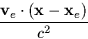
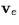
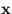
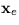

| TDB | D | TDB (MJD: JD-2400000.5) |
|---|---|---|
| UT1 | D | universal time (fraction of one day) |
| WL | D | clock longitude (radians west) |
| U | D | clock distance from Earth spin axis (km) |
| V | D | clock distance north of Earth equatorial plane (km) |
| sla_RCC | D | TDB-TT (sec; Note 1) |
|---|

where  is the barycentric velocity of the Earth,  and  are the barycentric positions of the observer and the Earth respectively, and c is the speed of light. It can be disabled, if necessary, by setting the arguments U and V to zero.
SLALIB --- Positional Astronomy Library